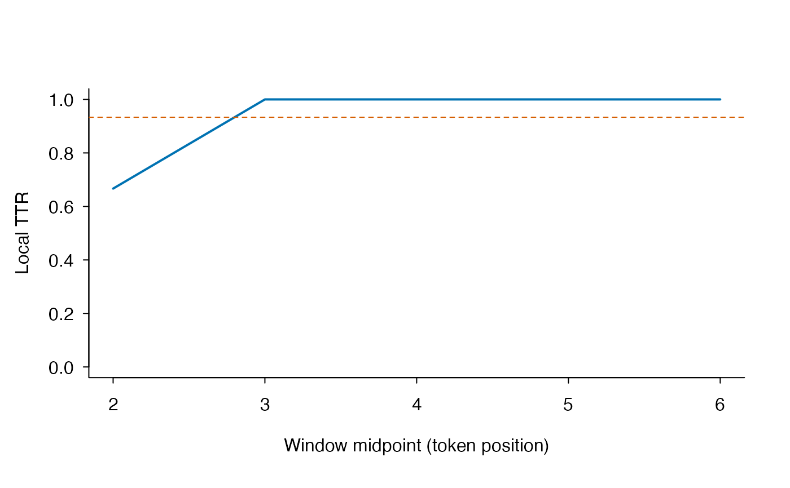

Inspect the local MATTR trajectory and positional exposure
Source:R/mattr-profile.R
lexdiv_mattr_profile.RdDecomposes canonical step-one MATTR specifications into their complete moving windows. It returns each local TTR and the number and nominal weight of windows containing each token position. The function does not choose a window length, resample tokens, infer a minimum valid text length, or turn the local profile into an inferential stability test.
Usage
lexdiv_mattr_profile(tokens, plan, max_rows = 1e+06)
# S3 method for class 'lexdiv_mattr_profile'
print(x, ...)Arguments
- tokens
Input accepted by
lexdiv_metrics(). Token strings are used for calculation but are not retained in the result.- plan
A normalized
lexdiv_plan()containing only MATTR specifications. Uselexdiv_grid()to request several window lengths.- max_rows
Maximum combined rows across
summary,windows,exposure, anddiagnostics, checked before detail allocation.- x
A
lexdiv_mattr_profileobject.- ...
Additional arguments passed to
print.data.frame().
Value
A lexdiv_mattr_profile list. summary contains the unchanged
canonical lexdiv_profile() rows; windows contains local
TTR values; exposure contains position-only inclusion counts and
weights; diagnostics reconciles the local mean with the canonical
result; and provenance records the profile contract, schema, and plan
identity.
The print method returns x invisibly.
Details
For a document of \(N\) tokens and requested window length \(w\), the
windows table contains \(N-w+1\) complete step-one windows when
\(N \ge w\). Each local value is the number of distinct types in that window
divided by \(w\). Their arithmetic mean reconciles with the unchanged
mattr_sliding_step1_v1 core value.
The exposure table makes MATTR's positional weighting observable. A
token position belongs to fewer windows near the endpoints than in the
interior. nominal_observation_weight divides each position's exposure
count by \((N-w+1)w\) and sums to one for each available request. It is an
accounting weight, not a causal contribution assigned to the token at that
position.
Bestgen (2024, doi:10.1111/lang.12630 ) distinguishes dependence on text length from sensitivity to the reduction parameter. Bestgen (2025, doi:10.1016/j.rmal.2024.100168 ) treats MATTR as especially useful for local fluctuation while criticizing unqualified whole-text interpretation because positional exposure is unequal. The function exposes those quantities but does not declare any window or text length universally valid.
Formal contract
The installed mattr-profile-contract.json file fixes the method reuse,
result topology, exposure formulas, missingness, privacy boundary, and
interpretation limits. Locate it with
system.file("spec", "mattr-profile-contract.json", package = "ldfreq").
Examples
methods <- lexdiv_methods()
mattr_method <- methods$method_id[methods$metric_id == "mattr"]
plan <- lexdiv_plan(
presets = character(),
grids = lexdiv_grid(
mattr_method,
"window_length",
c(3, 5),
request_id_prefix = "mattr"
)
)
profile <- lexdiv_mattr_profile(
c("a", "b", "a", "c", "d", "a", "e"),
plan
)
profile$summary
#> <lexdiv_profile_results: 2 specifications; schema 0.1.0>
#> request_id metric_id value status missing_reason N V below_quality_floor
#> 1 mattr_1 mattr 0.9333333 ok <NA> 7 5 TRUE
#> 2 mattr_2 mattr 0.8000000 ok <NA> 7 5 TRUE
profile$windows
#> plan_md5 request_index request_id
#> 1 674f1b166d70c1f9c3cddf5aec37a84f 1 mattr_1
#> 2 674f1b166d70c1f9c3cddf5aec37a84f 1 mattr_1
#> 3 674f1b166d70c1f9c3cddf5aec37a84f 1 mattr_1
#> 4 674f1b166d70c1f9c3cddf5aec37a84f 1 mattr_1
#> 5 674f1b166d70c1f9c3cddf5aec37a84f 1 mattr_1
#> 6 674f1b166d70c1f9c3cddf5aec37a84f 2 mattr_2
#> 7 674f1b166d70c1f9c3cddf5aec37a84f 2 mattr_2
#> 8 674f1b166d70c1f9c3cddf5aec37a84f 2 mattr_2
#> specification_id metric_id method_id
#> 1 mattr-bac4f901b9f49406547f00211e0b61e9 mattr mattr_sliding_step1_v1
#> 2 mattr-bac4f901b9f49406547f00211e0b61e9 mattr mattr_sliding_step1_v1
#> 3 mattr-bac4f901b9f49406547f00211e0b61e9 mattr mattr_sliding_step1_v1
#> 4 mattr-bac4f901b9f49406547f00211e0b61e9 mattr mattr_sliding_step1_v1
#> 5 mattr-bac4f901b9f49406547f00211e0b61e9 mattr mattr_sliding_step1_v1
#> 6 mattr-0dd75ad6d41c9778d79550f2e9704bd8 mattr mattr_sliding_step1_v1
#> 7 mattr-0dd75ad6d41c9778d79550f2e9704bd8 mattr mattr_sliding_step1_v1
#> 8 mattr-0dd75ad6d41c9778d79550f2e9704bd8 mattr mattr_sliding_step1_v1
#> window_index window_start window_end window_midpoint window_length
#> 1 1 1 3 2 3
#> 2 2 2 4 3 3
#> 3 3 3 5 4 3
#> 4 4 4 6 5 3
#> 5 5 5 7 6 3
#> 6 1 1 5 3 5
#> 7 2 2 6 4 5
#> 8 3 3 7 5 5
#> distinct_types value
#> 1 2 0.6666667
#> 2 3 1.0000000
#> 3 3 1.0000000
#> 4 3 1.0000000
#> 5 3 1.0000000
#> 6 4 0.8000000
#> 7 4 0.8000000
#> 8 4 0.8000000
profile$exposure
#> plan_md5 request_index request_id
#> 1 674f1b166d70c1f9c3cddf5aec37a84f 1 mattr_1
#> 2 674f1b166d70c1f9c3cddf5aec37a84f 1 mattr_1
#> 3 674f1b166d70c1f9c3cddf5aec37a84f 1 mattr_1
#> 4 674f1b166d70c1f9c3cddf5aec37a84f 1 mattr_1
#> 5 674f1b166d70c1f9c3cddf5aec37a84f 1 mattr_1
#> 6 674f1b166d70c1f9c3cddf5aec37a84f 1 mattr_1
#> 7 674f1b166d70c1f9c3cddf5aec37a84f 1 mattr_1
#> 8 674f1b166d70c1f9c3cddf5aec37a84f 2 mattr_2
#> 9 674f1b166d70c1f9c3cddf5aec37a84f 2 mattr_2
#> 10 674f1b166d70c1f9c3cddf5aec37a84f 2 mattr_2
#> 11 674f1b166d70c1f9c3cddf5aec37a84f 2 mattr_2
#> 12 674f1b166d70c1f9c3cddf5aec37a84f 2 mattr_2
#> 13 674f1b166d70c1f9c3cddf5aec37a84f 2 mattr_2
#> 14 674f1b166d70c1f9c3cddf5aec37a84f 2 mattr_2
#> specification_id metric_id method_id
#> 1 mattr-bac4f901b9f49406547f00211e0b61e9 mattr mattr_sliding_step1_v1
#> 2 mattr-bac4f901b9f49406547f00211e0b61e9 mattr mattr_sliding_step1_v1
#> 3 mattr-bac4f901b9f49406547f00211e0b61e9 mattr mattr_sliding_step1_v1
#> 4 mattr-bac4f901b9f49406547f00211e0b61e9 mattr mattr_sliding_step1_v1
#> 5 mattr-bac4f901b9f49406547f00211e0b61e9 mattr mattr_sliding_step1_v1
#> 6 mattr-bac4f901b9f49406547f00211e0b61e9 mattr mattr_sliding_step1_v1
#> 7 mattr-bac4f901b9f49406547f00211e0b61e9 mattr mattr_sliding_step1_v1
#> 8 mattr-0dd75ad6d41c9778d79550f2e9704bd8 mattr mattr_sliding_step1_v1
#> 9 mattr-0dd75ad6d41c9778d79550f2e9704bd8 mattr mattr_sliding_step1_v1
#> 10 mattr-0dd75ad6d41c9778d79550f2e9704bd8 mattr mattr_sliding_step1_v1
#> 11 mattr-0dd75ad6d41c9778d79550f2e9704bd8 mattr mattr_sliding_step1_v1
#> 12 mattr-0dd75ad6d41c9778d79550f2e9704bd8 mattr mattr_sliding_step1_v1
#> 13 mattr-0dd75ad6d41c9778d79550f2e9704bd8 mattr mattr_sliding_step1_v1
#> 14 mattr-0dd75ad6d41c9778d79550f2e9704bd8 mattr mattr_sliding_step1_v1
#> position exposure_count window_inclusion_rate nominal_observation_weight
#> 1 1 1 0.2000000 0.06666667
#> 2 2 2 0.4000000 0.13333333
#> 3 3 3 0.6000000 0.20000000
#> 4 4 3 0.6000000 0.20000000
#> 5 5 3 0.6000000 0.20000000
#> 6 6 2 0.4000000 0.13333333
#> 7 7 1 0.2000000 0.06666667
#> 8 1 1 0.3333333 0.06666667
#> 9 2 2 0.6666667 0.13333333
#> 10 3 3 1.0000000 0.20000000
#> 11 4 3 1.0000000 0.20000000
#> 12 5 3 1.0000000 0.20000000
#> 13 6 2 0.6666667 0.13333333
#> 14 7 1 0.3333333 0.06666667
plot(profile, request_id = "mattr_1")
